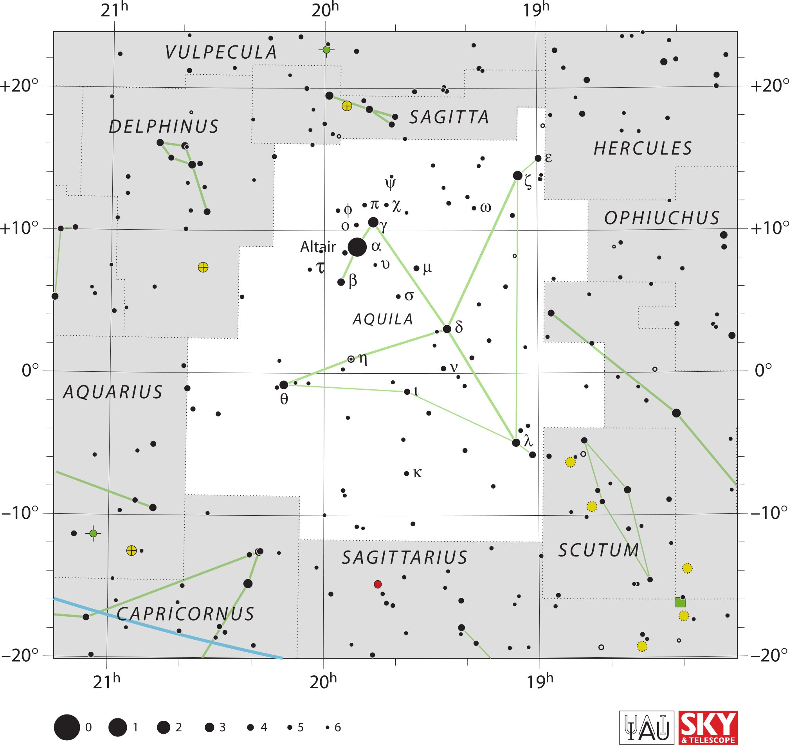

<div data-role="page" id="aquila" data-theme="a">

	<div data-role="header">
		<a href="#home" data-icon="back" data-rel="back">Back</a>
		<h1>Aquila</h1>
		<a href="#home" data-icon="home">Home</a>
	</div>

	<div data-role="content">

		<div class="cssImageMap">
			

			<a href="vulpecula.html" class="constellation" data-side="left"
				data-x="400" data-y="90" data-width="350" data-height="70"></a>

			<a href="delphinus.html" class="constellation" data-side="left"
				data-x="260" data-y="290" data-width="350" data-height="70"></a>

			<a href="aquarius.html" class="constellation" data-side="left"
				data-x="150" data-y="970" data-width="350" data-height="70"></a>

			<a href="capricornus.html" class="constellation" data-side="left"
				data-x="270" data-y="1540" data-width="400" data-height="70"></a>

			<a href="sagittarius.html" class="constellation" data-side="right"
				data-x="860" data-y="1390" data-width="400" data-height="70"></a>

			<a href="sagitta.html" class="constellation" data-side="right"
				data-x="1030" data-y="260" data-width="250" data-height="70"></a>

			<a href="hercules.html" class="constellation" data-side="right"
				data-x="1500" data-y="350" data-width="300" data-height="70"></a>

			<a href="ophiuchus.html" class="constellation" data-side="right"
				data-x="1530" data-y="520" data-width="350" data-height="70"></a>

			<a href="scutum.html" class="constellation" data-side="right"
				data-x="1420" data-y="1370" data-width="250" data-height="70"></a>

		</div>

		<div id="here">
			<h2>Aquila</h2>

			<p>Image Credit: IAU and Sky & Telescope magazine (Roger Sinnott
				& Rick Fienberg)
		</div>
	</div>
</div>
